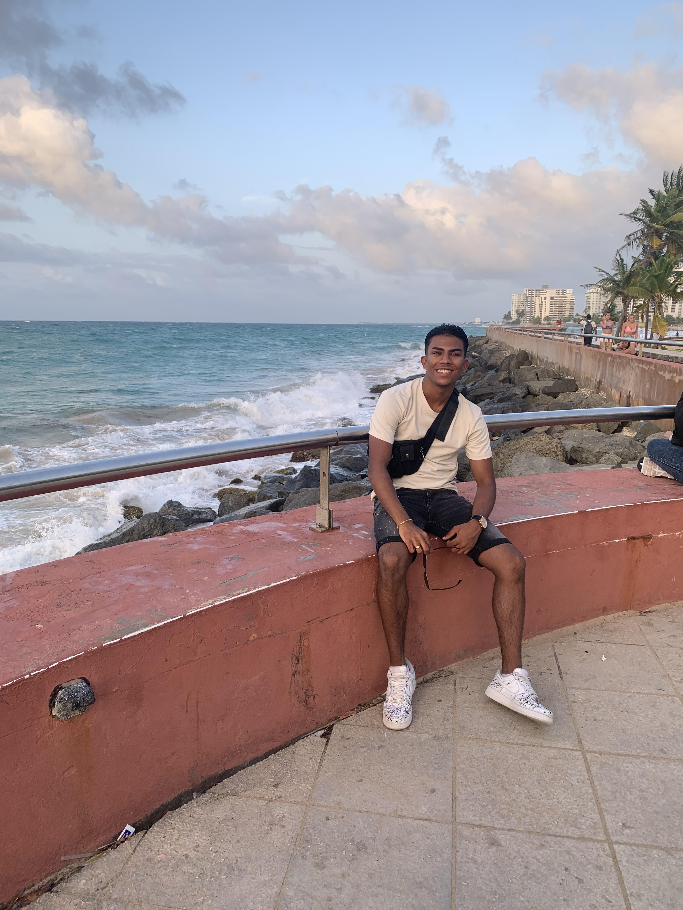

Ik heb voor deze opdracht mijn neef geïnterviewd,
want hij is zelf ook ICT-er en hij heeft mij ook geïnspireerd waarom dit beroep ook leuk is.
Ik heb hieronder de vragen die ik heb gesteld en ook de antwoorden die de ICT-er heeft beantwoord
en we hebben nog veel meer verder gesproken en dat waren lange teksten die ik anders zou typen
dus heb ik de interview in kortere zinnen getypt.
1. Welke opleiding heb je gedaan?
HBO ICT software engineering.
2. Waar werk je nu en wat is je functie?
Ik werk nu bij society en mijn functie is mobile Developer.
3. Waarom heb je voor dit beroep gekozen?
Het leek mij altijd leuk om mobile apps te maken.
4. Wat heb jij geleerd over het beroep ICT?
Hoe het allemaal te werk gaat in het business leven en hoe je met je klanten mee moet omgaan tijdens een
opdracht.
5. Waar moet je rekening mee houden met het beroep ICT?
Dat je jezelf telkens op de hoogte moet houden van de nieuwste technologie en jezelf daarmee blijven
updaten.
6. Wat zijn de leuke kanten en slechte kanten van je werk?
De leuke kanten volgens hem is: dat hij mobile apps ontwikkelt/maakt,
en de slechte/minder leuke kant is: het lange wachten totdat een change wordt approved.
7. Wat voor project heb je gemaakt?
Ik heb een mobile app gemaakt waar je kan kijken waar je met de auto gratis kan parkeren.
8. Wat deed je toen iets niet lukte?
Ik ging dan hulp vragen aan collega's en veel opzoeken op het internet om het zelf proberen op te lossen.
9. Waar wil je nu nog verder in ontwikkelen?
Hij wilt zichzelf verder ontwikkelen om TechLead Developer te worden.
10. Wat is belangrijk dat ik nog moet weten als ik later ga werken?
Hoe je gaat functioneren binnen een team/groepsopdracht en hoe je te werk moet gaan met je klanten.

Ik ga mijn eindopdracht hebben over mijn project boter kaas en eieren en dit ga ik vertellen via de
methode STARRT.
Mijn missie is om mijn portfolio zo mooi mogelijk eruit te laten zien,
zodat de bezoeker een mooie website ziet op zijn of haar scherm.
Ik wil mezelf natuurlijk ook meer gaan ontwikkelen en daarom wil ik deze portfolio gaan maken.
Bedrijven moeten mijn website ook mooi vinden en goed ontworpen, want dan zou ik misschien een nieuwe baan
krijgen.
Mijn doelstelling voor deze periode is: om een mooie portfolio te maken, met nette code en met geen enkele
fouten erin.
Ik wil ook deze periode meer nieuwe technieken leren over css want bootstrap heb ik al veel mee gewerkt, maar
die wil ga ik ook toepassen in deze periode.
| Number | Leerdoel | Bron | Afgerond |
|---|---|---|---|
| 1 | Carousel | https://www.w3schools.com/bootstrap5/bootstrap_carousel.php | |
| 2 | Offcanvas | https://www.w3schools.com/bootstrap5/bootstrap_offcanvas.php |